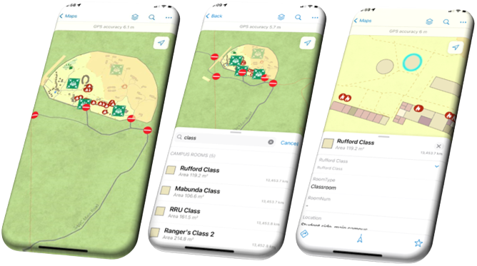

To ensure the success of SAWC’s future GIS projects, our team created several instruction packages. The instruction packages will allow the SAWC staff to efficiently maintain the delivered solutions and create similar GIS products themselves.
Instruction Package

Overview
Methodology
To support the client in maintaing each of the delivaried solutions, the team created several tutorial-style documents to walk SAWC staff through the basics of creating and modifying relevent GIS items. Each of the instruction packages were created by following the same general workflow, which began by documenting relevant proccessses while creating the deliverable solutions, then formating the documentation into topics and categories, and finally compiling the topics and formatting them accordingly.
General workflow to create the navigation solutions.
For the public-facing solutions, hosted feature layer views were created to display data with sensitive attributes. For example, Fire Extinguisher data had records outside of the campus and fields describing when the equipment was last serviced, which was information the public did not need to know. Setting visibility extents and deleting sensitive fields, we were able to make the Fire Extinguisher layer appropriate for public consumption.
Results
General GIS Instruction Package
The ‘General GIS Instruction Package’ details numerous processes that are relevant to all GIS users, and covers the work completed in several of the delivered solutions.
Screenshots of the ‘General GIS Instruction Package’. This document has numerous tutorials ranging from the basics of creating a file geodatabase, to incorporating 360 images in ArcGIS StoryMaps.
Public Online/Offline Application
The next solution is a web map configured for use in ArcGIS Field Maps mobile application, for both online and offline use. This solution is also intended for members of the public and students of the college. The map displays the student side of the campus as well as Emergency Assembly Points and Fire Extinguishers. Within the app users can view their location within the college and search for/select rooms and buildings by name and number. Users can download an extent of the map for offline use, with all of the same capabilities.

Mobile application configured with Field Maps for public navigation.

Public Offline Printable Brochure
The final public solution is a printable brochure, for fully offline and deviceless use. The brochure displays a map of the student side of the Main Campus with labelled buildings and classrooms, a map of the Emergency Assembly Points around the Main Campus, and QR code to access the mobile application solution described above. Both maps were created and exported using ArcGIS Pro layouts.
Brochure for public navigation.
SAWC Staff Online/Offline Application
This "Staff Only" solution is also a web map configured for use in ArcGIS Field Maps mobile application, for both online and offline use. The map displays the entire campus as well as the surrounding reaseach zones and authorized access only roads. Within the app users can view their location and search for/select rooms and buildings by name and number. Users have two options for downloading extents for offline use, the extent of the campus or the entire extent including the several research zones.

Mobile application configured with Field Maps for SAWC staff navigation.
Customized, UTM Referenced Grids
Safari Consulting developed a customized, UTM referenced Grid code covering three park systems of interest, which allows for rapid dissemination of location information, without requiring users to interpret coordinate systems. The grid was produced in a feature class format, for easy inclusion in various projects. It was featured in PDF maps (A3 and A4, UTM projected), created by Safari Consulting, for three separate park systems, as well as the park systems combined.
Maps (not to scale) including UTM grids overlayed with a custom alpha numeric grid system.
A second mobile application solution uses Field Maps to feature the customized, UTM referenced grid, for easy coordination of location. The parks featured in this extent fall outside the primary study area for the basemap, and is solely for internal use, therefore a standard Esri basemap is used
Screenshots of phones displaying grid map in Field Maps.